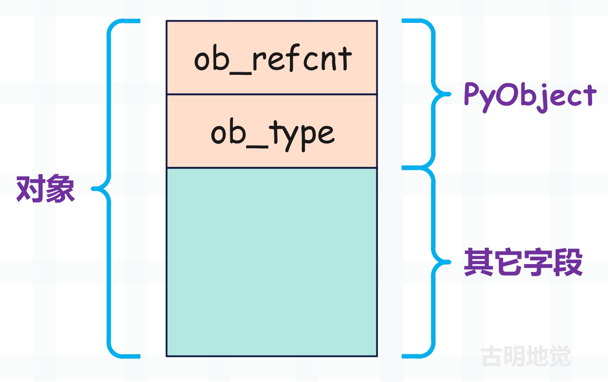
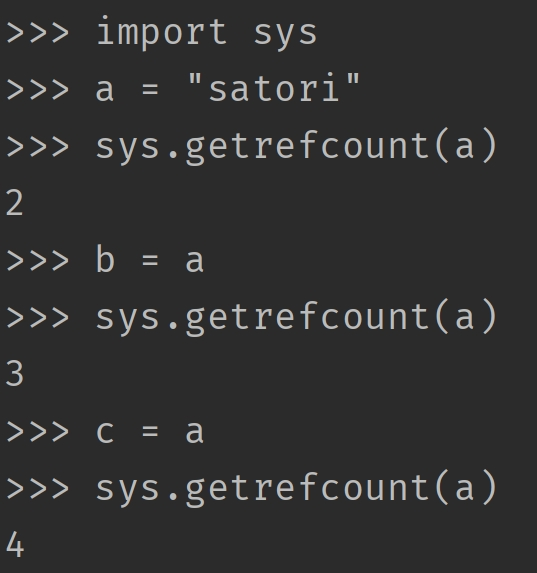
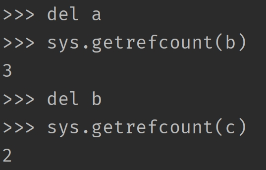
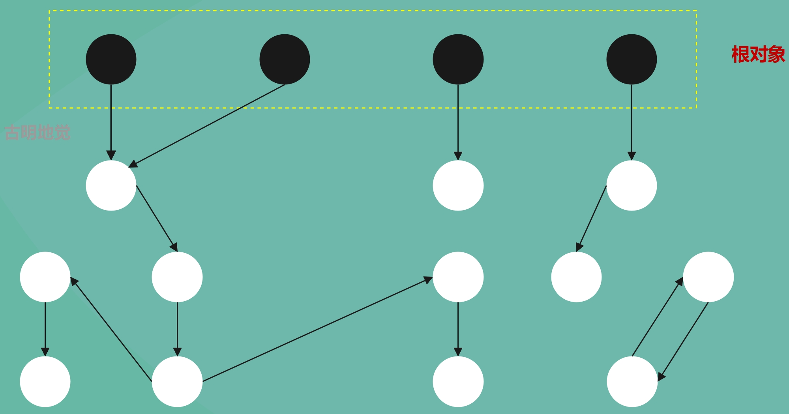
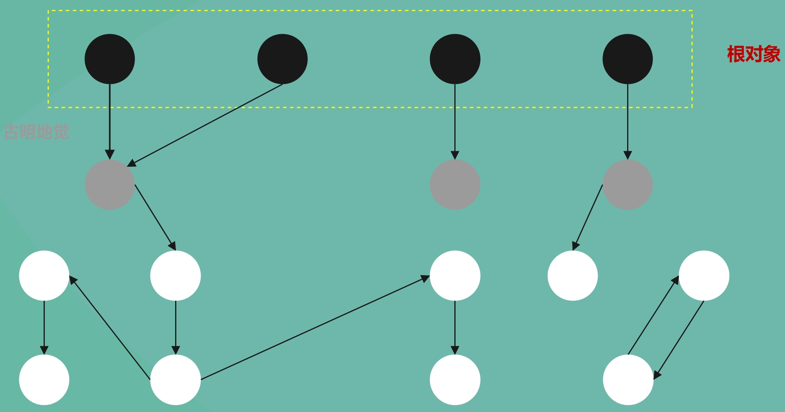
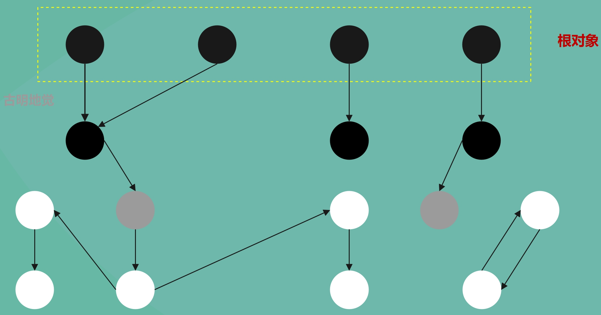
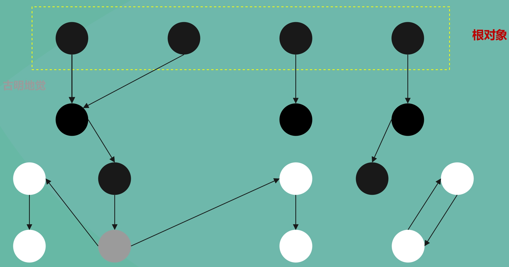
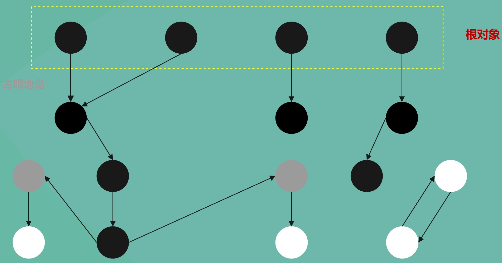
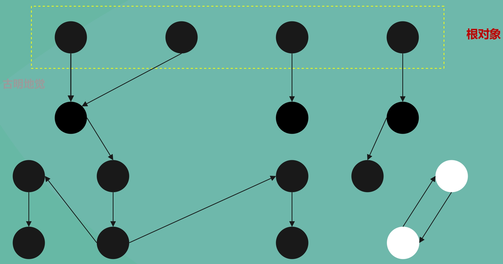

楔子
现在绝大部分高级语言都自带了垃圾回收机制，将开发者从繁重的内存管理工作中解放了出来。Python 作为一门高级语言，同样自带了垃圾回收，然而 Python 的垃圾回收和 Java，C# 等语言有一个很大的不同，那就是 Python 中大多数对象的生命周期是通过对象的引用计数来管理的。
引用计数
Python 对象的基石 PyObject 有两个属性，一个是对象的类型，还有一个就是引用计数。

所以从广义上讲，引用计数也算是一种垃圾回收机制，而且是一种最简单、最直观的垃圾回收机制。尽管需要一个值来维护引用计数，但是引用计数有一个最大的优点，就是实时性。任何内存，一旦没有指向它的引用，那么就会被回收。而其它的垃圾回收技术必须在某种特定条件下（比如内存分配失败）才能进行无效内存的回收。
引用计数机制会带来一些额外开销，因为要时刻维护引用计数的值，并且与 Python 运行中所进行的内存分配、释放、引用赋值的次数成正比。这一点和主流的垃圾回收技术，比如标记-清除（mark-sweep）、停止-复制（stop-copy）等方法相比是一个弱点，因为它们带来的额外开销只和内存数量有关，至于多少变量引用了这块内存则不关心。
因此为了与引用计数搭配，在内存的分配和释放上获得最高的效率，Python 设计了大量的缓存池机制，比如小整数对象池、字符串的 intern 机制，列表的 freelist 缓存池等等，这些大量使用的面向特定对象的缓存机制弥补了引用计数的软肋。
那么引用计数什么时候会增加，什么时候会减少呢？
引用计数加 1
- 对象被创建，如 a = 1；
- 对象被引用，如 b = a；
- 对象的引用作为参数传到一个函数中，如 func(a)；
- 对象的引用作为列表、元组等容器里面的元素；
引用计数减 1
- 指向对象的变量(符号)被显式的销毁，如 del a；
- 对象的引用指向了其它的对象，如 a = 2；
- 对象的引用离开了它的作用域，比如函数的局部变量，在函数执行完毕的时候会被销毁；
- 对象的引用所在的容器被销毁，或者从容器中删除等等；
查看引用计数
查看一个对象的引用计数，可以通过 sys.getrefcount(obj)，但是由于作为 getrefcount 这个函数的参数，所以引用计数会多 1。

Python 的变量只是一个和对象绑定的符号，在底层都是 PyObject * 泛型指针，所谓 b = a 在底层其实是把指针变量 a 存储的地址拷贝给了指针变量 b，所以此时 b 也指向了 a 指向的对象，因此字符串对象的引用计数就会加 1。

而每当减少一个引用，引用计数就会减少 1。尽管我们用 sys.getrefcount 得到的结果是 2，但是当这个函数执行完，由于局部变量的销毁，其实结果已经变成了 1。
因此引用计数机制非常简单，就是多一个引用，引用计数加 1；少一个引用，引用计数减 1；如果引用计数为 0，说明对象已经没有人引用了，那么就直接销毁（但内存不一定释放）。这就是引用计数机制的实现原理，简单且直观。
从目前来看，引用计数机制貌似还挺不错的，虽然需要额外用一个字段（ob_refcnt）来时刻维护引用计数的值，但对于现在的 CPU 和内存来说，完全不是事儿。最主要的是，引用计数机制真的很简单、很直观。但可惜的是，它存在一个致命的缺陷，这一缺陷几乎将引用计数在垃圾回收机制中判了"死刑"，这一缺陷就是"循环引用"。而且也正是因为"循环引用"这个致命伤，导致在狭义上并不把引用计数看成是垃圾回收机制的一种。
lst1 = []
lst2 = []
lst1.append(lst2)
lst2.append(lst1)
del lst1, lst2
初始的时候，lst1 和 lst2 指向的对象的引用计数都为 1，而在 lst1.append(lst2) 之后，lst2 指向的对象的引用计数就变成了 2，同理 lst2.append(lst1) 导致 lst1 指向的对象的引用计数也变成了 2。因此当我们 del lst1, lst2 的时候，引用计数会从 2 变成 1，由于不为 0，所以 lst1 和 lst2 指向的对象都不会被回收。所以此时我们就说 lst1 和 lst2 指向的对象之间发生了循环引用，如果只有引用计数机制的话，那么显然这两者是回收不了的。
为了更直观的观察到这个现象，我们用 ctypes 来模拟一下这个过程。
from ctypes import *
import gc
class PyObject(Structure):
_fields_ = [
("ob_refcnt", c_ssize_t),
("ob_type", c_void_p)
]
# 创建两个列表
lst1 = []
lst2 = []
# 获取它们的 PyObject *
# 注意：这一步不会改变对象的引用计数
py_lst1 = PyObject.from_address(id(lst1))
py_lst2 = PyObject.from_address(id(lst2))
# 显然初始的时候，引用计数都为 1
print(py_lst1.ob_refcnt) # 1
print(py_lst2.ob_refcnt) # 1
# lst2 作为列表的一个元素，所以指向对象的引用计数加 1
lst1.append(lst2)
print(py_lst1.ob_refcnt) # 1
print(py_lst2.ob_refcnt) # 2
# lst1 作为列表的一个元素，所以指向对象的引用计数加 1
lst2.append(lst1)
print(py_lst1.ob_refcnt) # 2
print(py_lst2.ob_refcnt) # 2
# 删除 lst1、lst2 之后，发现引用计数还为 1
del lst1, lst2
print(py_lst1.ob_refcnt) # 1
print(py_lst2.ob_refcnt) # 1
# 显然我们希望的结果是引用计数为 0
# 但是现在不为 0，原因就是发生了循环引用
# 于是 Python 的垃圾回收就登场了，发动一次 gc
gc.collect()
print(py_lst1.ob_refcnt) # 0
print(py_lst2.ob_refcnt) # 0
# nice，我们看到此时引用计数都变成了 0
# 此时两个对象也都会被回收
这里提前给出结论，一个对象是否被回收只取决于它的引用计数（ob_refcnt）是否为 0，只要为 0 就回收，不为 0 则存活。但由于对象之间会发生循环引用，导致引用计数失效，所以严格意义上不能把引用计数机制看成是垃圾回收机制的一种。于是 Python 除了引用计数机制之外，还提供了真正的垃圾回收技术（标记-清除和分代收集），来弥补这一漏洞。其工作方式也很简单，就是找出那些发生循环引用的对象，然后将循环引用导致增加的引用计数再给减掉，这样对象的引用计数不就正常了吗？
比如上面代码中 lst1 和 lst2 指向的对象，当 gc 触发时，垃圾回收器发现循环引用导致它们的引用计数增加了 1，于是会再将它们的引用计数减去 1，然后变成 0。而引用计数机制发现引用计数变为 0，便会将对象回收。
所以对象回收与否，完全是由它的引用计数决定的，垃圾回收只是在给引用计数机制擦屁股。如果程序不出现循环引用，那么引用计数机制足矣。但当出现了循环引用，垃圾回收机制就要出来解决这一点，将循环引用造成的影响抵消掉，从而让引用计数机制能够正常工作。
那么接下来的重点，就是要看看 Python 的垃圾回收是怎么解决循环引用的？
三色标记模型
无论何种垃圾回收机制，一般都分为两个阶段：垃圾检测和垃圾回收。
- 垃圾检测：从所有已经分配的内存中区别出可回收和不可回收的内存。
- 垃圾回收：将垃圾检测阶段所标识出来的可回收内存块交还给系统堆，后续可以分配给其它对象。所以垃圾回收，并不是说直接把这块内存的数据清空，而是将使用权交出去，不会自己霸占了。
而 Python 的垃圾回收采用的标记-清除和分代收集，分代收集我们一会再说，先来看看标记-清除是怎么实现的。从具体的实现上来讲，标记-清除方法同样遵循垃圾回收的两个阶段，其简要过程如下：
- 1）寻找根对象（root object）集合，所谓的 root object 集合就是一些全局引用和函数栈的引用，这些引用指向的对象是不可被删除的，而这个 root object 集合也是垃圾检测动作的起点；
- 2）从 root object 集合出发，沿着 root object 集合中的每一个引用进行探索，如果能到达某个对象 A，则称 A 是可达的（reachable），可达的对象也不能被删除。这个阶段就是垃圾检测阶段；
- 3）当垃圾检测阶段结束后，所有的对象被分为了可达的（reachable）和不可达的（unreachable）。所有可达对象都必须予以保留，而不可达对象所占用的内存将被回收；
而在这个过程中，Python 会建立一个三色标记模型，这个模型为标记-清除算法提供了一个清晰的实现框架。这个模型的核心就在于，将对象标记成了三种颜色，分别是黑色、灰色、白色，所以叫三色标记模型。
- 黑色（Black）：对象已被访问 / 标记，并且它引用的其它对象也都已经扫描完毕，该对象确定为可达对象。
- 灰色（Gray）：对象已被访问 / 标记，但它引用的其它对象还未被扫描，该对象处于正在处理的过渡状态。
- 白色（White）：对象尚未被访问 / 标记。
如果将三色标记模型考虑进去，那么整个回收过程如下：
- 1）垃圾回收开始时所有对象都是白色。
- 2）将 root 对象标记为灰色。
- 3）遍历灰色对象的引用，将其引用的对象也标记为灰色，然后再将自身标记为黑色（从灰变黑）。
- 4）重复步骤 3）直到没有灰色对象。
- 5）检测结束后，对象要么是黑色，要么是白色。如果是黑色，那么说明对象可达，不能删除；如果是白色，那么说明对象不可达（为垃圾），可以被删除。
我们用图形的方式，来描述一下。

在垃圾回收动作被激活之前，系统中所分配的对象之间的引用关系组成了一张有向图，对象是图中的节点，而对象间的引用则是节点和节点之间的连线。
黑色的节点表示被引用的活跃对象，也就是可达对象；白色的节点表示需要回收、但因循环引用而导致无法回收的垃圾对象，也就是不可达。由于根对象本身就是可达的，所以直接将它标记为黑色。然后我们假设除了根对象之外都是不可达的，所以下面都标记成了白色，至于它到底是不是白色，需要通过遍历才知道。
然后开始遍历了，显然从根对象开始遍历，根对象是可达的，被根对象引用的对象同样也是可达的。所以当我们从根对象出发，沿着引用关系遍历，能够遍历到的对象都是可达的，我们将其标记为灰色。

这里可能有人会产生一个疑问，既然都可达了，为啥不直接标记成黑色呢？或者说三色标记模型本身就不太需要灰色，只要黑色和白色就够了。其实灰色状态有两个重要作用：
- 标记扫描进度：引入灰色状态能够清晰地显示当前正在处理哪些对象，可以避免重复扫描或遗漏，如果没有灰色就无法知道扫描到哪里了。
- 支持增量回收：灰色作为中间状态，允许垃圾回收过程动态暂停和恢复。暂停时灰色对象记录了未完成的扫描位置，这对减少程序停顿时间很重要。
所以灰色状态虽然理论上可以没有，但实际实现中它能提高效率和灵活性。
然后继续扫描，遍历灰色对象。

将灰色对象引用的其它对象也设置为灰色，然后再将自身设置为黑色。所以灰色只是一层中间状态，它和黑色都代表可达，只是通过引入灰色能够显示扫描进度和支持增量回收。因此对于那些可达对象，会先被标记成灰色，等到遍历这些灰色对象引用的对象（也标记为灰色）之后，再将上一层的灰色对象标记成黑色。
事实上 root 对象也应该先标记为灰色的，等到遍历它引用的对象时，再将它标记为黑色。只是为了方便，我们这里直接就标记为黑色了，大家理解就好。
然后继续从新的被标记成灰色的对象开始往下找，就是一层一层遍历嘛。所以遍历灰色对象，整个过程就做两件事：
- 将其直接引用的对象设置为灰色。
- 然后再将其设置为黑色（从灰变黑）。

凡是被引用到了的对象，都是可达的，不能删除。

如果从根集合开始，按照广度优先的策略进行搜索的话，那么不难想象，灰色节点集合就如同波纹一样不断向外扩散。凡是被灰色波纹触碰到的就会变成黑色，没有被触碰到的则还是原来的白色。

遍历完所有的对象之后，说明垃圾检测阶段结束了。如果是白色，说明是不可达的，会被回收；如果是黑色，说明是可达的，不会被回收。
比如图中的两个白色节点，从任何一个根节点出发都遍历不到它，显然它们是因为循环引用而无法被回收的垃圾对象。这时垃圾回收器会将它们的引用计数减一，所以上面说的垃圾回收并不是真的就直接把对象回收了，而是减少它的引用计数。至于对象的回收，则是由引用计数机制发现对象的引用计数为 0、然后调用 tp_dealloc 实现的。
正如一开始说的那样，垃圾回收只是在给引用计数机制擦屁股。垃圾回收做的工作就是修正对象的引用计数，解决循环引用带来的问题，而对象的回收则由引用计数机制负责。
以上就是垃圾回收中的标记-清除法，还是很好理解的，Python 内部采用的就是这种方法，先找出所有的根对象，然后再从根对象出发找到所有的可达对象。
分代收集技术
上面说了，Python 主要的内存管理手段是引用计数，而标记-清除和分代收集只是为了打破循环引用而引入的补充技术。
这一事实意味着垃圾回收只关注可能会产生循环引用的对象，而像整数、字符串这些对象是绝对不可能产生循环引用的，因为它们内部不可能持有对其他对象的引用，所以这些直接通过引用计数机制就可以实现，另外后面我们说的垃圾回收也专指那些可能产生循环引用的对象。
而循环引用只会发生在 container 对象之间，所谓 container 对象就是指内部可持有对其它对象的引用的对象，比如字典、列表、元组、自定义类对象、自定义类对象的实例对象等等。所以当垃圾回收机制开始运行时，只需要检查这些 container 对象即可，对于整数、字符串、浮点数等对象则不需要理会，这使得垃圾回收带来的开销只依赖于 container 对象的数量，而非所有对象的数量。
为了达到这一点，Python 就必须跟踪所创建的每一个 container 对象，并将这些对象组织到一个集合中，只有这样，才能将垃圾回收的动作限制在这些对象上。而 Python 的做法是维护一条双向链表（实际上 3 条），我们称之为可收集对象链表，所有的 container 对象在创建之后，都会被插入到这条链表当中。
当然，除了维护用于 container 对象的链表之外，还会维护一个名为 refchain 的链表，这个链表也是双向的。程序中产生的所有对象都会挂到这个链表上，注意是所有对象。然后当对象要被回收时，就将它从 refchain 里面摘除，比较简单。
所以任何一个对象在创建之后都会加入到 refchain 里面，而 container 对象由于要参与垃圾回收，所以它还必须加入到可收集对象链表里面。
可收集对象链表
在分析 Python 对象机制的时候我们看到，任何一个 Python 对象都可以分为两部分，一部分是 PyObject_HEAD，另一部分是对象自身的数据。然而对于一个需要被垃圾回收机制跟踪的 container 对象来说还不够，因为这个对象还必须链入到可收集对象链表中。而一个 container 对象要想成为一个可收集的对象，则必须加入额外的信息，这个信息位于 PyObject_HEAD 之前，称为 PyGC_Head。